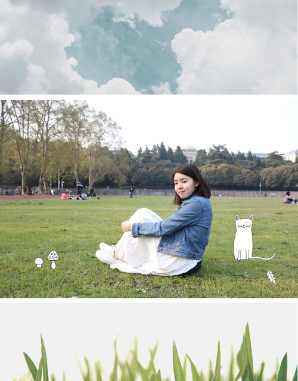

Hello.
I’m Peggy. 1st-year M.S student @ UM School of Information.
A former Architecture Designer. Current UX Designer who love to solve problems with the research-driven method.
Have strong responsibility for my work and eager to advocate for my users. Try to bring up the most delightful solutions for both my users and the clients.